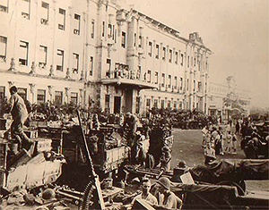

|
j
a v a s c r i p t |
Pg.1/5
February 4, 1945, Sunday

Artillery Arrives at Liberated Sto. Tomas
Went to bed at 2300 and slept right through a large explosion at 0200. At 0525 the ground shook as if in an earthquake — explosions as rapid as 4th of July fireworks rang out accompanied by much rifle and machine gun shooting. Must be Pinaglabanan, I thought. I dressed hurriedly and hit the street at 0545, counting 11 fires on my way to Mass. In front of the Santa Mesa Church, a peppy Father Gil came out to join our conversation. "Ohayo," said Perez jokingly. Two minutes later, four struggling soldiers, sweating despite the cool morning, came by and asked us if they were headed towards Santa Ana. "Hai!" said Perez sharply, pointing in the wrong direction. The exchange was repeated until the leader was confident he had the right direction. Balancing his helmet, rifle and ammo, and shifting his heavy pack uncomfortably, he asked: "Any bridges? Be-ri-ges?" "Hai!" shouted Perez — though he didn't really know. "Any Americans?" — pointing toward the east. We just stared stupidly at the questioner. "No 'mericans?" "Nai!" roared Perez, pointing to the sky and adding: "Bougainville, Bougainville!" In no mood to argue, the Japanese trudged away looking very tired, dirty and defeated. Ygoa saw 1,000 Japanese marching through Santa Mesa toward the east at 0100 last night. Ynchausti saw officers stop and turn away several Japanese trucks coming from the outskirts into the city. The low-flying P-47s I saw yesterday dropped packages over Santo Tomas. Rumor has it that the Americans already entered Santo Tomas last night! . . . A surreal scene took place on the street as two B-25s flew low over us. I thought they dropped leaflets because a commotion started below on the street. I went to check and found women and children armed with bayongs on the hunt for anything edible. Having discovered some cooked Mongo on the street, they went for it — all happy, giggling faces despite the fires, explosions, and a few Japanese shells whistling overhead. The sounds of war drifted in from around Pureza or so — machine, rifle and pistol shots — 1,000 all told. |
|
|
|
|